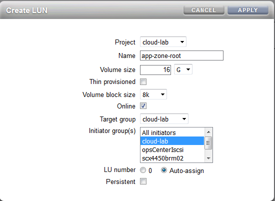
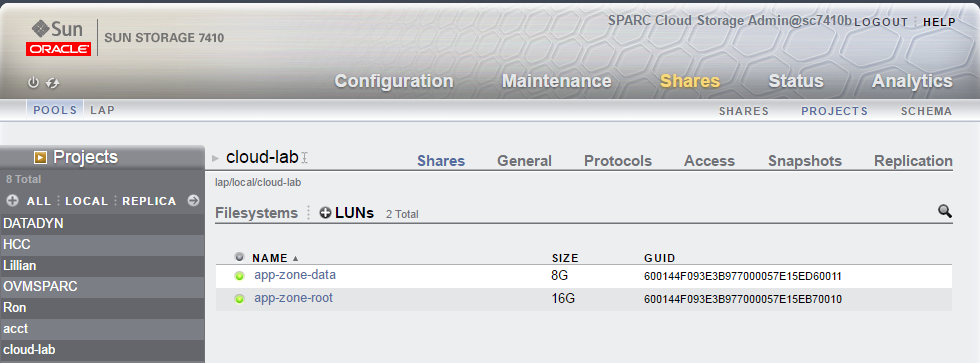

This lab will demonstrate you how to migrate your existing on-premises applications to Oracle SPARC Cloud and how to manage them on the cloud. In this lab we will:
Here is the overall picture of what we are going to do. You can see that on premises the zone's root and application data are located on the internal drives as ZFS file systems created on rpool ZFS pool. On Oracle SPARC Cloud node we use ZFS storage appliance and its iSCSI LUNs to store both zone's root and database data. We chose this configuration just to demonstrate flexibility of our migration approach. Your real life situation might be different, but the approach will be the same.

If you already have an application running inside a Solaris zone, you may skip the first two steps and go straight to archive creation.
We will install a standard non-global zone and with an external ZFS dataset as it seems to be the most common application zone configuration. Most operations are pretty standard so we won't make a lot of comments on the way. If something is not clear in the following commands, please refer to Oracle Solaris 11 Virtualization lab or the official Oracle Solaris documentation.
root@source:~# zonecfg -z app-zone create root@source:~# zfs create rpool/app-data root@source:~# zonecfg -z app-zone zonecfg:app-zone> add dataset zonecfg:app-zone:dataset> set name=rpool/app-data zonecfg:app-zone:dataset> end zonecfg:app-zone> exit root@source:~# zoneadm -z app-zone install root@source:~# zoneadm -z app-zone boot
After the zone boots, run 'zlogin -C app-zone' and configure the zone's profile using the interactive dialog which follows after that command. Configure the zone's hostname, IP address, time zone, user and root passwords, etc. In the OSC lab environment use the parameters provided by your instructor.
We decided to use Employee DB from the set of MySQL examples as our application. It might be not as complex as your real life databases and applications, but it's very easy to install and test our concepts without going too deeply into application details.
After the zone has booted, login into it and install and configure MySQL.
root@app-zone:~# pkg list -a '*mysql*' . . . (list of various MySQL packages) root@app-zone:~# pkg install database/mysql-55 database/mysql-55/client root@app-zone:~# svccfg -s mysql:version_55 setprop mysql/data=/app-data root@app-zone:~# svcadm refresh mysql:version_55 root@app-zone:~# chown -R mysql:mysql /app-data root@app-zone:~# chmod -R 700 /app-data/ root@app-zone:~# svcadm enable mysql root@app-zone:~# svcs '*mysql*' STATE STIME FMRI online 12:23:02 svc:/application/database/mysql:version_55
Now download the database into the zone and install it. We assume that the database is already downloaded from the Internet and stored in the global zone. You can find it here: https://github.com/datacharmer/test_db (thanks to Giuseppe Maxia for maintaining it).
root@app-zone:~# scp lab@cloud-node:/export/home/lab/test_db-master.zip /tmp root@app-zone:~# cd /tmp root@app-zone:/tmp# unzip test_db-master.zip root@app-zone:/tmp# cd test_db-master root@app-zone:/tmp/test_db-master# mysql < employees.sql INFO CREATING DATABASE STRUCTURE INFO storage engine: InnoDB INFO LOADING departments INFO LOADING employees INFO LOADING dept_emp INFO LOADING dept_manager INFO LOADING titles INFO LOADING salaries data_load_time_diff NULL root@app-zone:/tmp/test_db-master# mysql -t < test_employees_md5.sql ..... (you will see the control and actual checksums for the database tables)
Well, it's installed now. Let's run some simple queries.
root@app-zone:/tmp/test_db-master# mysql
Welcome to the MySQL monitor. Commands end with ; or \g.
....
mysql> show databases;
+--------------------+
| Database |
+--------------------+
| information_schema |
| employees |
| mysql |
| performance_schema |
| test |
+--------------------+
5 rows in set (0.00 sec)
mysql> use employees;
(how many employees do we have?)
mysql> select count(*) from employees;
+----------+
| count(*) |
+----------+
| 300024 |
+----------+
1 row in set (0.11 sec)
(list top 10 most frequent last names in the database)
mysql> SELECT last_name, COUNT(emp_no) AS num_emp
FROM employees
GROUP BY last_name
ORDER BY num_emp DESC
LIMIT 10;
--------------
+-----------+---------+
| last_name | num_emp |
+-----------+---------+
| Baba | 226 |
| Coorg | 223 |
| Gelosh | 223 |
| Sudbeck | 222 |
| Farris | 222 |
| Adachi | 221 |
| Osgood | 220 |
| Mandell | 218 |
| Neiman | 218 |
| Masada | 218 |
+-----------+---------+
10 rows in set (0.45 sec)
mysql> quit;
Well, you database is working now, let's migrate it to the cloud!
Get back to the global zone where you are running your application zone. In our case it's called 'source'. Create the archive of app-zone and check it with the following commands:
root@source:~# archiveadm create app-zone.uar -r -e -z app-zone
root@source:~# archiveadm info -v app-zone.uar
Archive Information
Creation Time: 2016-09-09T19:20:58Z
Source Host: sct4-2r-brm-02
Architecture: sparc
Operating System: Oracle Solaris 11.3 SPARC
Recovery Archive: Yes
Unique ID: 0e652c12-722c-4ab3-86d3-ad98d4ba4f41
Archive Version: 1.0
Deployable Systems
'app-zone'
OS Version: 0.5.11
OS Branch: 0.175.3.11.0.6.0
Active BE: solaris-1
Brand: solaris
Size Needed: 2.2GB
Unique ID: 1f20b365-9a22-4fde-8c92-82b7cad67e04
AI Media:
Root-only: No
As you can see, 'app-zone' is listed here as "deployable system" from this archive. Also note that we have used '-r' parameter when creating the archive. It means that we are creating a "recovery" archive which will preserve the system's identity: IP address, hostname, users and passwords, etc. Most likely it's what you need when migrating applications to cloud: you'll want to be able to access them using the same URLs (IP addresses or hostnames). If you want to change that, you may use "cloning" archive by omitting the '-r' parameter. In that case you'll have to configure the system's identity at the first boot. We will use that method later in the lab to clone applications within the cloud.
Before we move to the cloud and restore the application zone we have to shut it down here, at the source server. Otherwise we'll get a duplicate IP address error.
root@source:~# zoneadm -z app-zone shutdown
Now we have to transfer the archive to the target machine. It could be your cloud node, or your SPARC server in another location. In our case it's just another server in the lab. We'll call it 'sparc-cloud'. In the command below we are using the default Oracle Public Cloud user 'opc' which exists on every cloud node.
root@source:~# scp app-zone.uar opc@sparc-cloud:/tmp
After it's completed, login into the cloud node and prepare for restoring the application zone. In the cloud most likely you will use iSCSI devices to store your application's data and zone root file systems. This gives you more flexibility and allows migration between cloud nodes. That's why it's the recommended practice as opposed to storing zone's data on local drives. So we'll have to edit the zone's configuration on the cloud before installing it.
But first we have to create a couple of iSCSI LUNs on the ZFS storage device. We'll use its BUI (Browser User Interface) for that. Go to the ZFSSA's URL (in our OSC lab it's https://10.80.15.11:215) and login as opc/solaris_opc. Then go to "Shares", choose the project "cloud-lab" from "Projects" on the left side and go to "LUNs". You will see no configured LUNs in this project.
Click on the "+" button and add a LUN for the zone's root:
After that, add another LUN for the application's data (call it "app-data"). You should see them both on the LUNs page:
Now we should be able to see both LUNs as disk devices on our cloud node.
root@cloud-node:~# echo | format
Searching for disks...done
c0t600144F093E3B977000057E15EB70010d0: configured with capacity of 15.94GB
c0t600144F093E3B977000057E15ED60011d0: configured with capacity of 7.94GB
AVAILABLE DISK SELECTIONS:
0. c0t5000CCA03C4D6FC0d0
/scsi_vhci/disk@g5000cca03c4d6fc0
1. c0t5000CCA012AD40FCd0
/scsi_vhci/disk@g5000cca012ad40fc
2. c0t5000CCA012AFA60Cd0
/scsi_vhci/disk@g5000cca012afa60c
3. c0t5000CCA012B34B30d0
/scsi_vhci/disk@g5000cca012b34b30
4. c0t600144F093E3B977000057C04548000Cd0
/scsi_vhci/ssd@g600144f093e3b977000057c04548000c
5. c0t600144F093E3B977000057E15EB70010d0
/scsi_vhci/ssd@g600144f093e3b977000057e15eb70010
6. c0t600144F093E3B977000057E15ED60011d0
/scsi_vhci/ssd@g600144f093e3b977000057e15ed60011
7. c0t600144F093E3B9770000511E95FA0001d0
/scsi_vhci/ssd@g600144f093e3b9770000511e95fa0001
Specify disk (enter its number): Specify disk (enter its number):
Yes, they are visible and we can use them. We just have to figure our which one is which and configure them properly in the zone we are going to reproduce. Let's first create the zone and then add these two LUNs as ZFS pools.
root@sparc-cloud:~# root@cloud-node:~# zonecfg -z app-zone create -a /tmp/app-zone.uar -z app-zone root@sparc-cloud:~# zoneadm list -cv ID NAME STATUS PATH BRAND IP 0 global running / solaris shared - app-zone configured /system/zones/app-zone solaris excl
We have to edit the zone's configuration: remove the dataset 'app-data' and replace it with the iSCSI LUN. Also we want to use iSCSI LUN for the root ZFS pool as well. Start with removing the 'app-data' dataset:
root@cloud-node:~# zonecfg -z app-zone
zonecfg:app-zone> info
zonename: app-zone
zonepath.template: /system/zones/%{zonename}
zonepath: /system/zones/app-zone
brand: solaris
autoboot: false
autoshutdown: shutdown
bootargs:
file-mac-profile:
pool:
limitpriv:
scheduling-class:
ip-type: exclusive
hostid:
tenant:
fs-allowed:
anet 0:
linkname: net0
lower-link: auto
allowed-address not specified
configure-allowed-address: true
defrouter not specified
allowed-dhcp-cids not specified
link-protection: mac-nospoof
mac-address: auto
auto-mac-address: 2:8:20:91:7:7
mac-prefix not specified
mac-slot not specified
vlan-id not specified
priority not specified
rxrings not specified
txrings not specified
mtu not specified
maxbw not specified
bwshare not specified
rxfanout not specified
vsi-typeid not specified
vsi-vers not specified
vsi-mgrid not specified
etsbw-lcl not specified
cos not specified
pkey not specified
linkmode not specified
evs not specified
vport not specified
dataset 0:
name: rpool/app-data
alias: app-data
zonecfg:app-zone> remove dataset name=rpool/app-data
zonecfg:app-zone> exit
Now let's add the root pool. In the storage array BUI find the GUID for "app-zone-root" LUN. In our case it's '600144F093E3B977000057C04548000C'. Copy it in the clipboard and use it in the following command on the cloud node:
root@cloud-node:~# echo | format | grep 600144F093E3B977000057C04548000C
c0t600144F093E3B977000057C04548000Cd0: configured with capacity of 15.94GB
5. c0t600144F093E3B977000057C04548000Cd0
So we have found the device name of the LUN that we are going to use for the zone's root. Now we have to enter its URI (Unified Resource Identifier) in the zone's configuration. We have to use another command to find the URI we need:
root@cloud-node:~# suriadm lookup-uri c0t600144F093E3B977000057C04548000Cd0 dev:dsk/c0t600144F093E3B977000057C04548000Cd0 iscsi://192.168.222.2/luname.naa.600144f093e3b977000057c04548000c iscsi://192.168.222.2/target.iqn.1986-03.com.sun:02:26469c91-a89a-edd0-84a6-cdd63c742203,lun.0 iscsi://192.168.222.2/target.iqn.1986-03.com.sun:02:a156922d-a334-e3c5-cba7-9812cb370559,lun.0
As you can see, there are several different forms of URI for this particular device. We recommend using the first 'iscsi://' form as it's the most portable one. Enter this URI in the zone's configuration:
root@cloud-node:~# zonecfg -z app-zone zonecfg:app-zone> add rootzpool zonecfg:app-zone:rootzpool> add storage iscsi://192.168.222.2/luname.naa.600144f093e3b977000057c04548000c zonecfg:app-zone:rootzpool> end zonecfg:app-zone> exit
Now we should add another LUN for application data. We use the same steps:
root@cloud-node:~# echo | format | grep 600144F093E3B977000057C0456B000D
c0t600144F093E3B977000057C0456B000Dd0: configured with capacity of 15.94GB
4. c0t600144F093E3B977000057C0456B000Dd0
root@cloud-node:~# suriadm lookup-uri c0t600144F093E3B977000057C0456B000Dd0
dev:dsk/c0t600144F093E3B977000057C0456B000Dd0
iscsi://192.168.222.2/luname.naa.600144f093e3b977000057c0456b000d
iscsi://192.168.222.2/target.iqn.1986-03.com.sun:02:26469c91-a89a-edd0-84a6-cdd63c742203,lun.2
iscsi://192.168.222.2/target.iqn.1986-03.com.sun:02:a156922d-a334-e3c5-cba7-9812cb370559,lun.2
root@cloud-node:~# zonecfg -z app-zone
zonecfg:app-zone> add zpool
zonecfg:app-zone:zpool> add storage iscsi://192.168.222.2/luname.naa.600144f093e3b977000057c0456b000d
zonecfg:app-zone:zpool> set name=app-data
zonecfg:app-zone:zpool> end
zonecfg:app-zone> exit
And now we are ready to install the zone from the archive that we've copied from the source server.
root@cloud-node:~# zoneadm -z app-zone install -a /tmp/app-zone.uar -z app-zone
Configured storage resource(s) from:
iscsi://192.168.222.2/luname.naa.600144f093e3b977000057c04548000c
Created zpool: app-zone_rpool
Configured storage resource(s) from:
iscsi://192.168.222.2/luname.naa.600144f093e3b977000057c0456b000d
Created zpool: app-zone_app-data
Progress being logged to /var/log/zones/zoneadm.20160826T191727Z.app-zone.install
Installing: This may take several minutes...
Install Log: /system/volatile/install.14426/install_log
AI Manifest: /tmp/manifest.app-zone.feoW0b.xml
Zonename: app-zone
Installation: Starting ...
Commencing transfer of stream: 9ee3d9a1-8d1a-41b8-9904-a102964722e0-0.zfs to app-zone_rpool/rpool
Commencing transfer of stream: 9ee3d9a1-8d1a-41b8-9904-a102964722e0-1.zfs to app-zone_app-data
Completed transfer of stream: '9ee3d9a1-8d1a-41b8-9904-a102964722e0-1.zfs' from file:///tmp/app-zone.uar
Completed transfer of stream: '9ee3d9a1-8d1a-41b8-9904-a102964722e0-0.zfs' from file:///tmp/app-zone.uar
Archive transfer completed
Installation: Succeeded
Zone BE root dataset: app-zone_rpool/rpool/ROOT/solaris-recovery
Cache: Using /var/pkg/publisher.
Updating image format
Image format already current.
Updating non-global zone: Linking to image /.
Processing linked: 1/1 done
Updating non-global zone: Syncing packages.
No updates necessary for this image. (zone:app-zone)
Updating non-global zone: Zone updated.
Result: Attach Succeeded.
Done: Installation completed in 124.783 seconds.
Next Steps: Boot the zone, then log into the zone console (zlogin -C)
to complete the configuration process.
Log saved in non-global zone as /system/zones/app-zone/root/var/log/zones/zoneadm.20160826T191727Z.app-zone.install
Success! Now boot the zone, login into it and check if everything is in place.
root@cloud-node:~# zoneadm -z app-zone boot root@cloud-node:~# zlogin -C app-zone [Connected to zone 'app-zone' console] app-zone console login: lab Password: oracle1 Last login: Thu Aug 25 14:48:06 2016 from sct4-2r-brm-02. Oracle Corporation SunOS 5.11 11.3 August 2016 lab@app-zone:~$ su - Password: solaris1 Oracle Corporation SunOS 5.11 11.3 August 2016 root@app-zone:~# mysql Welcome to the MySQL monitor. Commands end with ; or \g. . . . mysql> show databases; +--------------------+ | Database | +--------------------+ | information_schema | | employees | | mysql | | performance_schema | | test | +--------------------+ 5 rows in set (0.00 sec) mysql> use employees; Database changed mysql> select count(*) from employees; +----------+ | count(*) | +----------+ | 300024 | +----------+ 1 row in set (0.09 sec) mysql> quit; Bye root@app-zone:~#
Everything looks good. IP address was preserved from the source installation, the database is in place, the number of employees is exactly the same.
It works! Congratulations!
Let's summarize what we have done here. Remember, we had a zone on the source server with a zone root located on local drive and a separate ZFS pool where the application data was stored. We packaged it into a Unified Archive and shipped to the cloud. On the cloud node we decided to use iSCSI devices (LUNs) instead of local disks both for the zone's root file system and application data. And here the Unified Archives magic helped us a lot: we were able to unpack and install the zone's archive very easily and all the data went into right places. You just have to make sure you use the same names for your datasets. Notice also that originally the application zone was running on a bare metal SPARC system, but we migrated it into a logical domain on the cloud without any issues.
We decided to use iSCSI LUNs instead of local drives because it gives us more flexibility. Having both zone's root and application data located on a shared storage allows us to migrated the zone very easily between cloud nodes in case we need it.
What if you want to create a clone of your existing zone in the cloud? After all, cloud is created for massive horizontal scalability, so we might need several instances of the existing application.
The easiest way to do it is to use Unified Archives again, but this time we will use its "clone" mode instead of "recovery" mode. The major difference is that in "recovery" mode we preserve the system's identity: IP address, hostname, users, etc., but in "clone" mode we clean this information from the archive, essentially we "unconfigure" the system. That means at the first boot we'll have to go through the system configuration steps, or we have to create and use system profile during cloning. Let's use the latter, as it allows us to use the clone application zone immediately after the first boot.
We start with creating another archive from the application zone we have just migrated to the cloud. We use the same command, but without '-r' flag so by default 'archiveadm' will create a "clone" archive.
root@cloud-node:~# archiveadm create app-zone.uar -e -z app-zone
root@cloud-node:~# archiveadm info -v app-zone.uar
Archive Information
Creation Time: 2016-09-19T21:11:56Z
Source Host: cloud-node
Architecture: sparc
Operating System: Oracle Solaris 11.3 SPARC
Recovery Archive: No
Unique ID: 23ac4eba-954b-4739-bfa2-f3930e5e53d1
Archive Version: 1.0
Deployable Systems
'app-zone'
OS Version: 0.5.11
OS Branch: 0.175.3.11.0.6.0
Active BE: solaris-1-recovery
Brand: solaris
Size Needed: 1.1GB
Unique ID: 18d4d2ab-22ec-41be-9610-a90e3a8f9acc
AI Media:
Root-only: Yes
Then we can create a cloned zone from this archive:
root@cloud-node:~# zonecfg -z app-zone2 create -a app-zone.uar -z app-zone
root@cloud-node:~# zonecfg -z app-zone2 info
zonename: app-zone2
zonepath: /system/zones/app-zone2
brand: solaris
autoboot: false
autoshutdown: shutdown
bootargs:
file-mac-profile:
pool:
limitpriv:
scheduling-class:
ip-type: exclusive
hostid:
tenant:
fs-allowed:
anet:
linkname: net0
lower-link: auto
allowed-address not specified
configure-allowed-address: true
defrouter not specified
allowed-dhcp-cids not specified
link-protection: mac-nospoof
mac-address: auto
mac-prefix not specified
mac-slot not specified
vlan-id not specified
priority not specified
rxrings not specified
txrings not specified
mtu not specified
maxbw not specified
bwshare not specified
rxfanout not specified
vsi-typeid not specified
vsi-vers not specified
vsi-mgrid not specified
etsbw-lcl not specified
cos not specified
pkey not specified
linkmode not specified
evs not specified
vport not specified
rootzpool:
storage: iscsi://192.168.222.2/luname.naa.600144f093e3b977000057c04548000c
zpool:
name: app-data
storage: iscsi://192.168.222.2/luname.naa.600144f093e3b977000057c0456b000d
So we have just copied the original zone's configuration into the new one. Everything is good, but there is one problem: we have copied also the iSCSI LUNs that are used by the original zone. For the new zone we have to create two new iSCSI LUNs (for root and for data) and change them in the zone's configuration. First, create two new iSCSI LUNs on the ZFS appliance and use their URIs in the app-zone2's configuration.
Now repeat the same commands as above to figure out URIs for the new two LUNs.
root@cloud-node:~# echo | format | grep 600144F093E3B977000057C73D36000F
c0t600144F093E3B977000057C73D36000Fd0: configured with capacity of 15.94GB
5. c0t600144F093E3B977000057C73D36000Fd0
root@cloud-node:~# echo | format | grep 600144F093E3B977000057C73D17000E
c0t600144F093E3B977000057C73D17000Ed0: configured with capacity of 15.94GB
4. c0t600144F093E3B977000057C73D17000Ed0
root@cloud-node:~# suriadm lookup-uri c0t600144F093E3B977000057C73D36000Fd0
dev:dsk/c0t600144F093E3B977000057C73D36000Fd0
iscsi://192.168.222.2/luname.naa.600144f093e3b977000057c73d36000f
iscsi://192.168.222.2/target.iqn.1986-03.com.sun:02:26469c91-a89a-edd0-84a6-cdd63c742203,lun.6
iscsi://192.168.222.2/target.iqn.1986-03.com.sun:02:a156922d-a334-e3c5-cba7-9812cb370559,lun.6
root@cloud-node:~# suriadm lookup-uri c0t600144F093E3B977000057C73D17000Ed0
dev:dsk/c0t600144F093E3B977000057C73D17000Ed0
iscsi://192.168.222.2/luname.naa.600144f093e3b977000057c73d17000e
iscsi://192.168.222.2/target.iqn.1986-03.com.sun:02:26469c91-a89a-edd0-84a6-cdd63c742203,lun.4
iscsi://192.168.222.2/target.iqn.1986-03.com.sun:02:a156922d-a334-e3c5-cba7-9812cb370559,lun.4
And now edit the new zone's configuration:
root@cloud-node:~# zonecfg -z app-zone2 zonecfg:app-zone2> select rootzpool zonecfg:app-zone2:rootzpool> set storage=iscsi://192.168.222.2/luname.naa.600144f093e3b977000057c73d36000f zonecfg:app-zone2:rootzpool> end zonecfg:app-zone2> select zpool name=app-data zonecfg:app-zone2:zpool> set storage=iscsi://192.168.222.2/luname.naa.600144f093e3b977000057c73d17000e zonecfg:app-zone2:zpool> end zonecfg:app-zone2> exit
We can start cloning right now, but the resulting clone zone will be 'unconfigured' and we'll have to configure it after the first boot. Instead, we can create its profile beforehand and use it when cloning. This way the new zone will be ready to use right after the first boot.
root@cloud-node:~# sysconfig create-profile -o app-zone2
You have to fill all the system parameters in the screens that follow: hostname, IP adress, time zone, user name and password, etc. We hope it's a familiar procedure so we skip it here. Use the values provided by your lab instructor.
Now you can use this profile in the zone installation command.
root@cloud-node:~# zoneadm -z app-zone2 install -a app-zone.uar -z app-zone -c ./app-zone2
Configured storage resource(s) from:
iscsi://192.168.222.2/luname.naa.600144f093e3b977000057c73d17000e
Imported zpool: app-zone2_rpool
Configured storage resource(s) from:
iscsi://192.168.222.2/luname.naa.600144f093e3b977000057c73d36000f
Imported zpool: app-zone2_app-data
The following ZFS file system(s) have been created:
rpool/VARSHARE/zones/app-zone2
Progress being logged to /var/log/zones/zoneadm.20160919T214451Z.app-zone2.install
Installing: This may take several minutes...
Install Log: /system/volatile/install.9178/install_log
AI Manifest: /tmp/manifest.app-zone2.OVVbKc.xml
Zonename: app-zone2
Installation: Starting ...
Commencing transfer of stream: 18d4d2ab-22ec-41be-9610-a90e3a8f9acc-0.zfs to rpool/VARSHARE/zones/app-zone2/rpool
Completed transfer of stream: '18d4d2ab-22ec-41be-9610-a90e3a8f9acc-0.zfs' from file:///root/app-zone.uar
Archive transfer completed
Installation: Succeeded
Zone BE root dataset: rpool/VARSHARE/zones/app-zone2/rpool/ROOT/solaris-1-recovery
Cache: Using /var/pkg/publisher.
Updating image format
Image format already current.
Updating non-global zone: Linking to image /.
Processing linked: 1/1 done
Updating non-global zone: Syncing packages.
No updates necessary for this image. (zone:app-zone2)
Updating non-global zone: Zone updated.
Result: Attach Succeeded.
Done: Installation completed in 133.706 seconds.
Next Steps: Boot the zone, then log into the zone console (zlogin -C)
to complete the configuration process.
Log saved in non-global zone as /system/zones/app-zone2/root/var/log/zones/zoneadm.20160919T214451Z.app-zone2.install
root@cloud-node:~# zoneadm list -cv
ID NAME STATUS PATH BRAND IP
0 global running / solaris shared
9 app-zone running /system/zones/app-zone solaris excl
- app-zone2 installed /system/zones/app-zone2 solaris excl
Well, the new zone is installed. Now we have to clone the dataset. If you take a look at the ZFS pools that were created you'll notice that the data was not transferred to the clone zone.
root@cloud-node:~# zpool list NAME SIZE ALLOC FREE CAP DEDUP HEALTH ALTROOT app-zone2_app-data 7.94G 85K 7.94G 0% 1.00x ONLINE - app-zone2_rpool 15.9G 2.04G 13.8G 12% 1.00x ONLINE - app-zone_app-data 7.94G 173M 7.77G 2% 1.00x ONLINE - app-zone_rpool 15.9G 1.19G 14.7G 7% 1.00x ONLINE - rpool 278G 228G 50.3G 81% 1.00x ONLINE -
You see: the original dataset called app-zone_app-data is about 173M, but the same dataset in app-zone2 is only 85K. Clearly it was not transferred. Unified Archive cloning process reproduces the main system installation, but not the attached external ZFS pools. We will use ZFS send/receive commands to transfer the data.
root@cloud-node:~# zfs destroy app-zone_app-data@snap1 root@cloud-node:~# zfs snapshot app-zone_app-data@snap1 root@cloud-node:~# zfs send app-zone_app-data@snap1 | zfs recv app-zone2_app-data cannot receive: destination 'app-zone2_app-data' exists must specify -F to overwrite it root@cloud-node:~# zfs send app-zone_app-data@snap1 | zfs recv -F app-zone2_app-data root@cloud-node:~# zpool list NAME SIZE ALLOC FREE CAP DEDUP HEALTH ALTROOT app-zone2_app-data 7.94G 173M 7.77G 2% 1.00x ONLINE - app-zone2_rpool 15.9G 2.04G 13.8G 12% 1.00x ONLINE - app-zone_app-data 7.94G 173M 7.77G 2% 1.00x ONLINE - app-zone_rpool 15.9G 1.19G 14.7G 7% 1.00x ONLINE - rpool 278G 228G 50.3G 81% 1.00x ONLINE -
You noticed that we had to use '-F' parameter to overwrite the dataset created by the zone installation process at 'app-data' in app-zone2. Now the two datasets 'app-data' in both zones look similar.
What if you want to migrate the dataset to another cloud node? In that case you should use SSH tunnel and pipe the ZFS datastream into it. Like this:
root@cloud-node:~# zfs send app-zone_app-data@snap1 | ssh root@cloud-node2 'zfs recv -F app-zone2_app-data'
Note that the ZFS pool with this name should already exist on the target machine. Most likely it does if you have installed a zone from the archive beforehand.
Now we can start the zone, login into it and check our work.
root@cloud-node:~# zoneadm -z app-zone2 boot root@cloud-node:~# zoneadm list -cv ID NAME STATUS PATH BRAND IP 0 global running / solaris shared 9 app-zone running /system/zones/app-zone solaris excl 14 app-zone2 running /system/zones/app-zone2 solaris excl root@cloud-node:~# zlogin -C app-zone2 [Connected to zone 'app-zone2' console] app-zone2 console login: lab Password: oracle1 Last login: Tue Sep 20 13:53:01 2016 on console Oracle Corporation SunOS 5.11 11.3 August 2016 lab@app-zone2:~$ su - Password: solaris1 Sep 21 14:11:45 app-zone2 su: 'su root' succeeded for lab on /dev/console Oracle Corporation SunOS 5.11 11.3 August 2016 root@app-zone2:~# ls -l /app-data total 352545 -rw-r----- 1 mysql mysql 3455 Sep 20 13:47 app-zone.err -rw-rw---- 1 mysql mysql 5 Sep 20 13:47 app-zone.pid -rw-r----- 1 mysql mysql 1529 Sep 21 14:09 app-zone2.err -rw-rw---- 1 mysql mysql 6 Sep 21 14:09 app-zone2.pid drwx------ 2 mysql mysql 11 Sep 20 12:41 employees -rw-rw---- 1 mysql mysql 5242880 Sep 21 14:09 ib_logfile0 -rw-rw---- 1 mysql mysql 5242880 Sep 21 14:09 ib_logfile1 -rw-rw---- 1 mysql mysql 169869312 Sep 20 14:14 ibdata1 drwx------ 2 mysql mysql 74 Sep 20 12:23 mysql drwx------ 2 mysql mysql 20 Sep 20 12:23 performance_schema drwx------ 2 mysql mysql 2 Sep 20 12:23 test root@app-zone2:~# mysql Welcome to the MySQL monitor. Commands end with ; or \g. Your MySQL connection id is 1 Server version: 5.5.48 MySQL Community Server (GPL) Copyright (c) 2000, 2016, Oracle and/or its affiliates. All rights reserved. Oracle is a registered trademark of Oracle Corporation and/or its affiliates. Other names may be trademarks of their respective owners. Type 'help;' or '\h' for help. Type '\c' to clear the current input statement. mysql> use employees; Database changed mysql> select count(*) from employees; +----------+ | count(*) | +----------+ | 300024 | +----------+ 1 row in set (0.14 sec) mysql> quit; Bye root@app-zone2:~# ipadm NAME CLASS/TYPE STATE UNDER ADDR lo0 loopback ok -- -- lo0/v4 static ok -- 127.0.0.1/8 lo0/v6 static ok -- ::1/128 net0 ip ok -- -- net0/v4 static ok -- 10.80.10.92/23 net0/v6 addrconf ok -- fe80::8:20ff:feb6:e06/10 net0/v6 addrconf ok -- 2606:b400:410:831:8:20ff:feb6:e06/64
Great! Everything is in place: MySQL server is up and running, the database is there, file permissions were preserved, even all employees are intact! Note that we had access to the zone and the database immediately after the first boot, without any additional configuration steps. IP address is configured as we specified it when creating the system profile. As an additional exercise you may want to configure remote access to the original application (like accessing it from the global zone on cloud-node via 'mysql -h app-zone -u user employees') and check if it is preserved during cloning.
To summarize: we have cloned an application zone, we have cloned its dataset located on a ZFS Storage Appliance. We configured all zone's parameters and the zone was available immediately after boot. A useful hack: if you want to do it repeatedly and you don't want to go through several screens to create a system profile, you may just copy the 'app-zone2' directory and edit the XML file inside it with your favorite text editor or a script. Most likely you'll need to change only the hostname and IP address. A simple sed(1) script can do it for you easily.
Now we have two zones up and running on our cloud node. It's time to think about resource management. By default all zones share all the resources available in the system. But most likely it's not what we want. Most likely we want to make sure that every application has resources it needs and no one grabs all CPU and memory. In the following exercises we'll assign a certain number of CPUs and amount of memory to each zone and see how we can manage that dynamically.
First let's see what we have in the global zone at our cloud node.
root@cloud-node:~# psrinfo
. . .
233 on-line since 09/19/2016 15:48:59
234 on-line since 09/19/2016 15:48:59
235 on-line since 09/19/2016 15:48:59
236 on-line since 09/19/2016 15:48:59
237 on-line since 09/19/2016 15:48:59
238 on-line since 09/19/2016 15:48:59
239 on-line since 09/19/2016 15:48:59
root@cloud-node:~# psrinfo | wc -l
240
root@cloud-node:~# prtconf | grep Memory
Memory size: 452608 Megabytes
This is a default configuration of cloud node: 240 CPUs and 442 GB of memory (452608/1024 = 442).
Now let's look what's available in the application zones.
lab@app-zone:~$ psrinfo | wc -l
240
lab@app-zone:~$ prtconf | grep Memory
prtconf: devinfo facility not available
Memory size: 452608 Megabytes
. . .
lab@app-zone2:~$ psrinfo | wc -l
240
lab@app-zone2:~$ prtconf | grep Memory
prtconf: devinfo facility not available
Memory size: 452608 Megabytes
Apparently, both zones have all the resources available to them. We want to specify that each zone will have 4 CPUs and 8 GB of memory. Let's get back to the global zone and make changes in the configurations. Start with CPUs.
root@cloud-node:~# zonecfg -z app-zone zonecfg:app-zone> add dedicated-cpu zonecfg:app-zone:dedicated-cpu> set ncpus=4 zonecfg:app-zone:dedicated-cpu> end zonecfg:app-zone> exit root@cloud-node:~# zoneadm -z app-zone apply zone 'app-zone': Checking: Adding dedicated-cpu zone 'app-zone': Applying the changes
You see: we have changed the zone's configuration with zonecfg, but it was not applied to the zone until we issued 'zoneadm apply'. Alternatively you can use 'zonecfg -r' command to change the zone's live configuration, but it will not be preserved at the next boot. Now go to the session window with app-zone and check you work:
lab@app-zone:~$ psrinfo | wc -l
4
It worked as expected. There are other parameters you can specify to manage CPU resources. For example, you can set a range "from 4 to 8 CPUs" and specify the "importance" parameter to have more dynamic scheduling and to use resources more effectively. You can read more about different options here: http://docs.oracle.com/cd/E53394_01/html/E57855/z.config.ov-12.html.
To set memory boundaries, we have to make sure that the 'resource-caps' package is installed and the service 'rcap' is running.
root@cloud-node:~# pkg list -a '*resource-cap*' NAME (PUBLISHER) VERSION IFO system/resource-mgmt/resource-caps 0.5.11-0.175.3.3.0.2.0 i-- root@cloud-node:~# svcs '*rcap*' STATE STIME FMRI online Sep_19 svc:/system/rcap:default
Now use zonecfg to add 'capped-memory' control and set physical memory limit to 4G.
root@cloud-node:~# zonecfg -z app-zone zonecfg:app-zone> add capped-memory zonecfg:app-zone:capped-memory> set physical=4g zonecfg:app-zone:capped-memory> end zonecfg:app-zone> exit root@cloud-node:~# zoneadm -z app-zone apply zone 'app-zone': Checking: Adding capped-memory physical=4G zone 'app-zone': Applying the changes
Now go back to app-zone and check your work:
root@app-zone:~# prtconf | grep Memory prtconf: devinfo facility not available Memory size: 4096 Megabytes
As expected. Again, there are more options that you can use: limit swap and locked memory. Read about them here: http://docs.oracle.com/cd/E53394_01/html/E57855/z.config.ov-12.html.
To practice more you can go ahead and add similar resource controls for the second zone. Also it would be interesting to use zonestat(1) and watch zones' utilization levels while running some workloads inside. Hint: you can use pbzip2(1) command to compress a big file or directory. It can use multiple CPUs in parallel and produce a good load for your resources.